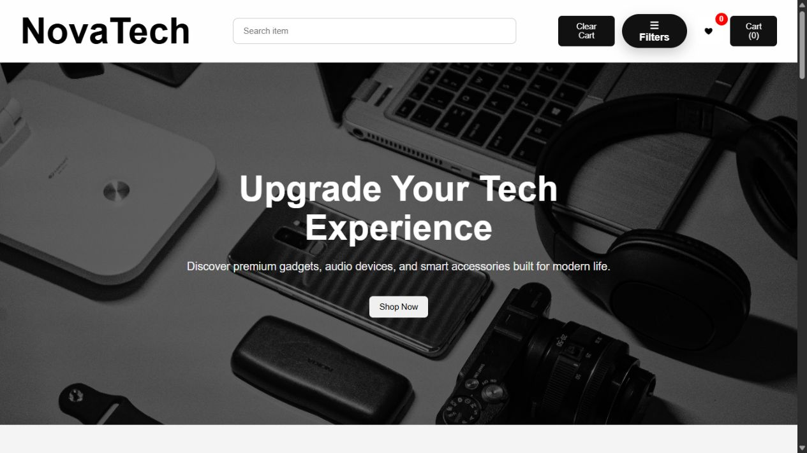
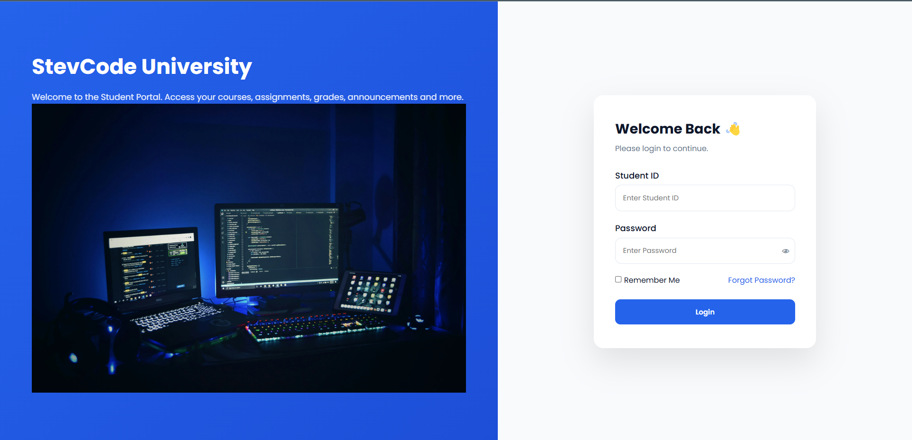

Published frontend work
Responsive JavaScript projects with real live links and clear user-facing behavior.
Portfolio / backend-focused web development
Junior Software Developer
Java · Spring Boot · MySQL · JavaScript
I build responsive web applications and am currently focused on backend engineering with Java, Spring Boot, secure workflows and MySQL-backed data.
What this portfolio shows
Responsive JavaScript projects with real live links and clear user-facing behavior.
StevCode Connect demonstrates authentication, request handling, interest flow and persistence.
No fake metrics, missing links or inflated claims. Each project is shown according to its real status.
Selected work
A community-help platform intended to help people request and offer assistance through a structured workflow. The current work focuses on the backend API, security, request lifecycle and database persistence.
Repository and live deployment are not public yet, so this project is presented without GitHub or demo links.
JWT-secured access protects user actions.
A user creates a validated help request.
Other users register interest in helping.
The request moves toward completion.



Published client website
A published website built for my mother's construction and real-estate business with a distinct white-and-gold identity.
HTML · CSS · JavaScript
Engineering ability
People need an organized way to request help, respond with interest, choose who helps and finalize the interaction.
The API uses Spring Boot and Spring Web for request handling, with Spring Security and JWT for authenticated access.
MySQL stores the application data through Spring Data JPA and Hibernate, keeping workflow state connected to real records.
I am practicing validation, clear request lifecycles and backend decisions that make the system easier to reason about.
About
I started with HTML, CSS and JavaScript, publishing responsive interfaces such as an e-commerce storefront, a student dashboard and a construction and real-estate website.
My current direction is backend engineering. StevCode Connect is where I am applying Java 21, Spring Boot, security, JWT authentication and MySQL-backed persistence to a real workflow.
I care about clear structure, truthful project presentation and building software that a recruiter or client can inspect with confidence.
Skills
HTML, CSS, JavaScript and responsive design used across my public projects.
Java, Spring Boot, Spring Web, Spring Security, JWT and REST API patterns in StevCode Connect.
MySQL with Spring Data JPA and Hibernate for database-backed workflows.
Git, GitHub, Postman and IntelliJ IDEA for building, testing requests and managing projects.
Contact